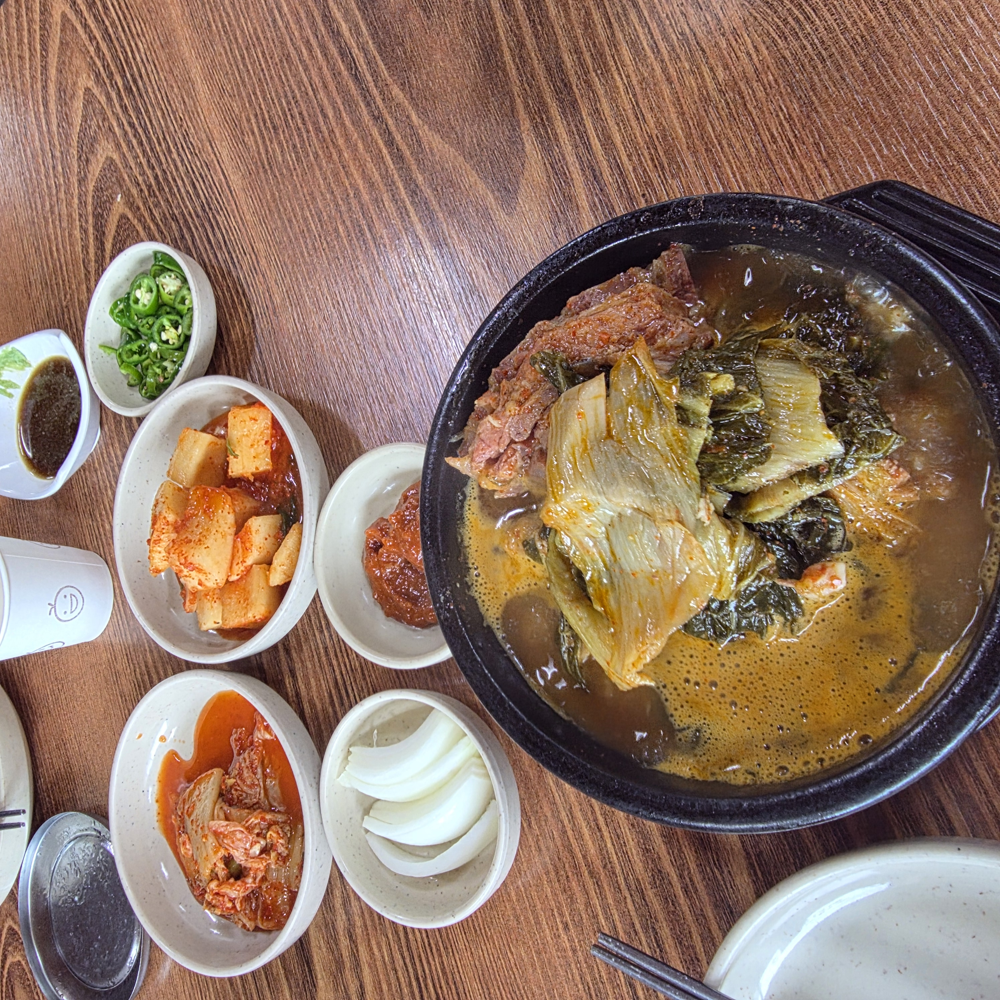
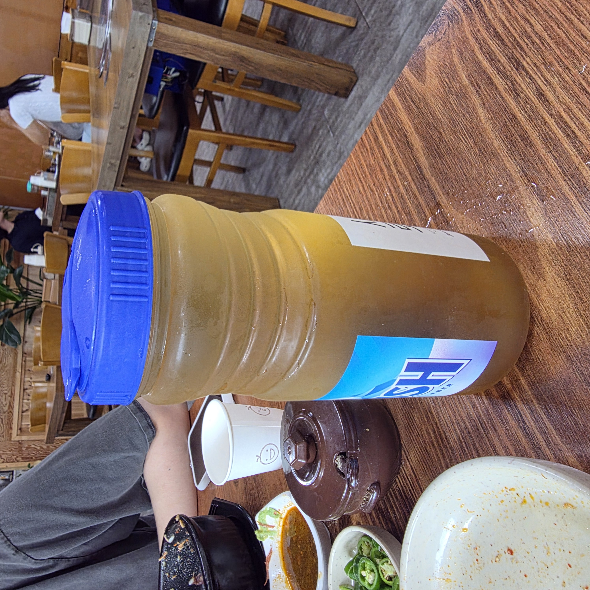

골목 안쪽에 자리한 넝쿨식당 – 파란 간판과 빨간 메뉴 현수막이 유일한 이정표다
김포 통진읍 서암로 골목 안쪽에 있는 넝쿨식당에 가족과 다녀왔습니다. 관광객이 검색해서 찾아오는 '핫플'이 아니라, 동네 사람들이 해장하러 들르고 식구들 데리고 한 끼 때우러 오는 소박한 국밥 노포예요. 그런데 뼈다귀해장국과 순대국 한 그릇을 비우고 나니 왜 이런 골목집에 단골이 붙는지 알 것 같았습니다. 이 집을 이야기할 때 빼놓을 수 없는 게 하나 있는데, 바로 순대국이라는 이름과 달리 정작 '순대'가 들어 있지 않다는 점이에요. 이 글에서는 그 특징을 포함해 찾아가는 길·주차·메뉴 고르는 법·부위별 차이·실제 맛·솔직한 단점·자주 묻는 것들까지, 처음 가는 분이 이 글 하나만 보고도 갈지 말지 판단할 수 있게 정리했습니다.
넝쿨식당 주소는 경기 김포시 통진읍 서암로6번길 19-9 (101호)입니다. 통진 시가지에서 큰길만 보고 가면 지나치기 쉬운데, 대로가 아니라 한 겹 안쪽 골목에 들어앉아 있기 때문이에요. 큰길에서 서암로6번길로 꺾어 들어가 빨간 메뉴 현수막이 걸린 파란 간판을 이정표 삼으면 헷갈리지 않습니다. 화려한 프랜차이즈 간판 사이에서 튀는 집이 아니라, 오히려 이 소박한 파란 간판이 표식이 되는 셈이죠.
주차는 솔직하게 말씀드리면 전용 주차장 여부를 제가 직접 확인하지 못했습니다. 골목 안 노포 특성상 넓은 전용 주차 공간을 기대하긴 어려워 보였고, 차를 가져가신다면 통진 시가지 인근 공영·노상 주차를 함께 염두에 두시는 편이 안전합니다. 확실한 주차 방법은 방문 전에 매장으로 전화(031-989-6441)해 물어보시길 권합니다. 이 글에서는 확인 못 한 부분은 지어내지 않고 '확인 권장'으로만 남겨두겠습니다.
문을 열고 들어서면 원목 테이블과 나무 의자가 줄지어 놓여 있고, 벽 한쪽에는 산수화 액자와 벽시계가 걸려 있습니다. 요즘 카페처럼 꾸민 인테리어와는 거리가 멀지만, 바닥도 테이블도 깔끔하게 정돈돼 있어서 아이를 데리고 앉아 밥 먹기에도 부담이 없었어요. 저희도 가족이 함께 갔는데, 아이가 편하게 앉아 밥 한 그릇을 뚝딱 비웠습니다.
이런 동네 노포는 분위기 자체가 '오래 머무는 곳'이 아니라 든든히 먹고 자리를 내주는 회전형 밥집에 가깝습니다. 그래서 관광지 맛집처럼 길게 줄 서서 기다리는 분위기는 아니었고, 편하게 들어가 금방 상을 받고 나올 수 있었어요. 다만 식사 피크 시간대(점심·저녁 붐빌 때)의 대기 여부까지는 제가 여러 번 가서 확인한 게 아니라 단정하긴 어렵습니다. 여유롭게 드시려면 식사 시간대를 살짝 비껴 가는 걸 추천드려요.
주문은 벽 메뉴판을 보고 자리에서 바로 시키면 될 만큼 간단했습니다. 다만 예약이나 포장·배달이 되는지는 제가 직접 확인하지 못했어요. 국밥·탕류 특성상 포장은 가능한 경우가 많지만, 이 집이 실제로 되는지는 단정할 수 없으니 필요하시면 방문·주문 전에 전화(031-989-6441)로 물어보시는 게 정확합니다. 여러 명이 탕류로 예약하고 가실 계획이라면 특히 미리 전화해 두는 편이 헛걸음을 줄여 줍니다.

메뉴판이 벽에 큼직하게 붙어 있어 고민 없이 주문할 수 있습니다. 구성은 크게 혼자 한 그릇 먹는 '식사류'와 여럿이 끓여 나눠 먹는 '탕류'로 갈립니다. 아래는 매장 메뉴판을 직접 촬영해 정리한 가격입니다(2026년 7월 기준).
| 뼈해장국 | 10,000원 / 대 13,000원 |
| 순대국 | 10,000원 / 대 13,000원 |
| 순대국(탕) | 소 20,000원 / 대 30,000원 |
| 뼈다귀(탕) | 소 20,000원 / 대 30,000원 |
| 감자탕 | 소 45,000원 / 대 55,000원 |
| 내장볶음 | 소 45,000원 / 대 55,000원 |
| 공기밥·볶음밥·사리 | 공기밥 1,000원 · 볶음밥 3,000원 · 감자탕사리(수제비) 2,000원 |
주문을 어떻게 잡으면 좋을지 인원별로 정리해 드릴게요. 혼자거나 둘이면 1만 원짜리 뼈해장국이나 순대국 한 그릇이 딱 맞습니다. 양이 부족할 것 같으면 '대(大)'로 3,000원만 더 얹으면 되고, 그래도 모자라면 공기밥 1,000원 추가가 부담 없어요. 셋 이상 가족·회식이라면 감자탕이나 내장볶음(소 45,000원)을 큼직하게 시켜 밥·사리까지 넣어 나눠 먹는 조합이 가성비가 좋아 보였습니다. 반주는 소주·맥주 5,000원, 막걸리 4,000원이라 국밥에 한 잔 곁들여도 부담이 적습니다.

넝쿨식당에서 가장 먼저 놀란 건 순대국을 시켰는데 순대가 안 보인다는 점이었습니다. 보통 순대국 하면 당면이 꽉 찬 순대가 큼직하게 들어 있는 걸 떠올리잖아요. 그런데 여기는 순대 대신 살코기와 내장, 머릿고기 위주로 뚝배기를 채웁니다. 처음엔 '어? 순대가 없네' 했다가, 한 술 떠보고는 오히려 납득이 됐어요.
국물은 순댓국 특유의 진하고 깊은 육수 맛을 그대로 살리면서, 순대에서 오기 쉬운 물컹한 식감이나 특유의 잡내가 없습니다. 그래서 순대의 물컹함이나 냄새를 부담스러워하는 분에게 오히려 더 잘 맞아요. 밥은 미리 말아 뚝배기째 뜨끈하게 내주는데, 고기 건더기가 실하게 씹혀서 '순대가 없어도 아쉽지 않다'는 말이 절로 나왔습니다. 물론 통통한 당면 순대를 기대하고 온 분이라면 취향이 갈릴 수 있으니, 그 점은 미리 알고 가시는 게 좋습니다. 저는 이 깔끔한 스타일이 오히려 마음에 들었어요.

또 하나의 간판 메뉴인 뼈다귀해장국은 검은 뚝배기 위로 우거지(시래기)가 수북하게 쌓여 나옵니다. 비주얼부터 '이건 해장이다' 싶은 인상이에요. 국물을 한 술 떠보면 뼈를 오래 고아낸 구수하고 진한 맛이 확 올라오는데, 진한데도 텁텁하지 않고 뒷맛이 개운한 편이었습니다.
안에는 큼직한 등뼈 한 덩이에 살코기가 넉넉히 붙어 있어서, 우거지와 함께 살을 발라 먹는 재미가 쏠쏠합니다. 얼큰함은 아주 매운 정도는 아니고 밥을 말아 넘기기 딱 좋은 칼칼함이라, 전날 술을 했다면 해장으로 제격이겠다 싶었어요. 순대국이 담백·깔끔한 쪽이라면, 뼈다귀해장국은 얼큰하고 든든한 쪽입니다. 둘이 가서 하나씩 시켜 국물을 번갈아 맛보는 것도 좋은 방법이에요.


밑반찬은 화려하진 않아도 국밥과 궁합이 좋은 기본기에 충실했습니다. 깍두기와 배추김치, 아삭한 무절임, 매콤한 청양고추, 그리고 새우젓이 함께 나오는데, 순대국·뼈해장국은 이 새우젓으로 간을 맞추는 게 정석이에요. 처음부터 소금을 넣기보다 새우젓을 조금씩 풀어 가며 간을 잡으면 국물 본연의 맛을 해치지 않습니다.
깍두기는 지나치게 달지 않고 시원하게 익어 국물과 잘 어울렸고, 청양고추는 느끼함을 잡아 주는 역할을 톡톡히 했습니다. 밥은 스테인리스 공기에 담겨 나와 국에 말아도, 반찬과 따로 먹어도 좋았어요. 개인적으로 반찬을 짜지 않게 내주는 점이 마음에 들었습니다. 국밥집 반찬이 짜면 국물까지 물려버리기 쉬운데, 여긴 그 균형이 좋았어요.

국밥집의 매력은 뚝배기가 보글보글 끓으며 나오는 그 장면에 있죠. 김이 오르는 뼈다귀해장국을 저어 가며 우거지를 건져 먹는 맛은 사진 한 장보다 짧은 영상으로 담으면 훨씬 군침이 돕니다. (티스토리 에디터에서 이 문단 자리에 끓는 국물 영상 클립을 넣어 두면 현장감이 살아납니다.)
식사를 마치고 나면 시원한 옥수수수염차 한 잔으로 입가심하기 좋습니다. 뜨끈한 국밥에 얼큰한 국물까지 비운 뒤라, 구수한 차 한 모금이 유난히 개운했어요. 아이까지 밥 한 그릇을 다 비운 걸 보면서, 온 가족이 부담 없이 한 끼 해결하기 좋은 집이라는 걸 실감했습니다. 뭔가 특별한 디저트가 있는 건 아니지만, 국밥 뒤 이 차 한 잔의 마무리가 노포다운 정겨움이었어요.

좋은 점만 늘어놓으면 후기가 아니겠죠. 솔직하게 참고할 점부터 남깁니다. ① 화려한 인테리어를 기대하면 실망할 수 있는 소박한 옛날 밥집입니다. 분위기로 데이트하는 곳은 아니에요. ② 통진 시가지에서 골목 한 겹 안이라 초행길엔 살짝 헤맬 수 있습니다. ③ '순대국'인데 당면 순대가 없어 순대를 기대한 분은 취향이 갈릴 수 있어요. ④ 영업시간·휴무일을 제가 공개 정보로 확인하지 못했고, 주차도 확정하지 못했습니다. 헛걸음을 피하려면 방문 전 전화(031-989-6441)로 확인하시길 권합니다.
반대로 이런 분께는 자신 있게 추천합니다. ① 통진·대곶 근처에서 진하고 뜨끈한 국밥 한 그릇이 당길 때. ② 순대의 물컹함·냄새가 싫어 깔끔한 순대국을 찾는 분. ③ 우거지 듬뿍 얼큰한 해장국으로 전날 술을 풀고 싶은 분. ④ 아이 데리고 편하게 가족 한 끼 하려는 분. ⑤ 만 원 안팎으로 든든하게 배 채우고 싶은 가성비 손님. 관광지 맛집의 화려함 대신 동네 노포의 정직한 한 그릇을 원한다면, 넝쿨식당은 기대에 어긋나지 않을 겁니다. 저는 다음에 가면 감자탕에 볶음밥까지 넣어 가족끼리 나눠 먹어 볼 생각이에요.
Q. 순대국인데 정말 순대가 안 들어가나요?
네, 제가 먹은 순대국에는 당면 순대 대신 살코기·내장·머릿고기가 들어 있었습니다. 국물은 진한 순댓국 육수 그대로라 순대의 물컹함·냄새를 싫어하는 분께 오히려 잘 맞아요.
Q. 혼밥 하기 괜찮나요? 얼마면 되나요?
네. 뼈해장국·순대국이 각 10,000원(대 13,000원)이라 혼자 한 그릇 먹기 딱 좋습니다. 공기밥 추가도 1,000원이라 부담이 적어요.
Q. 가족이나 여럿이 가면 뭘 시켜야 하나요?
셋 이상이면 감자탕이나 내장볶음(소 45,000원)을 시켜 밥·사리를 곁들여 나눠 먹는 조합을 추천합니다. 순대국(탕)·뼈다귀(탕)는 소 20,000원부터 있어 인원에 맞춰 고르면 됩니다.
Q. 주차 되나요?
전용 주차 여부는 제가 확인하지 못했습니다. 골목 안 노포라 인근 공영·노상 주차를 함께 고려하시거나, 방문 전 매장에 문의하시길 권합니다.
Q. 영업시간과 휴무일이 어떻게 되나요?
공개 정보에서 명확히 확인되지 않아 단정하지 않겠습니다. 헛걸음을 피하려면 방문 전 전화(031-989-6441)로 확인하는 게 가장 정확합니다.
Q. 위치가 정확히 어디인가요?
경기 김포시 통진읍 서암로6번길 19-9(101호)이고, 통진 시가지에서 골목 한 겹 안 파란 간판·빨간 현수막을 이정표로 찾으면 됩니다.
| 상호 | 넝쿨식당 (김포 통진, 뼈·순대 전문 노포) |
| 주소 | 경기 김포시 통진읍 서암로6번길 19-9 101호 |
| 전화 | 031-989-6441 |
| 영업시간·휴무 | 공개 정보 미확인 – 방문 전 전화(031-989-6441) 확인 권장 |
| 주차 | 미확인 – 인근 공영·노상 주차 병행 권장 |
| 대표 메뉴 | 뼈해장국·순대국 각 10,000원(대 13,000) · 감자탕/내장볶음 소 45,000원 |
| 특징 | 순대국에 순대 대신 고기·내장 · 우거지 가득 뼈다귀해장국 · 만 원대 가성비 |